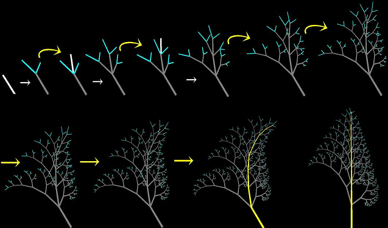

proects
Sketch L-System: Global Control of Tree Modeling Using Free-form Stroke
Abstract
L-system is a tool commonly used for modeling and simulating the growth of plants. In this paper, we propose a new tree modeling system based on L-system that allows the user to control the overall appearance and the depth of recursion, which represents the level of growth, easily and directly, by drawing
a single stroke. We introduce a new module into L-system whose growth direction is determined by a user-drawn stroke. As the user draws the stroke, the system gradually advances the growth simulation and creates a tree model along the stroke. Our technique is the first attempt to control the growth of a
simulation in L-system using stroke input.

Materials
Takashi Ijiri, Shigeru Owada, and Takeo Igarashi
Sketch L-System: Global Control of Tree Modeling Using Free-form Stroke.
In Proc of the 6th International Symposium of SmartGraphics, pp. 138-146, 2006.